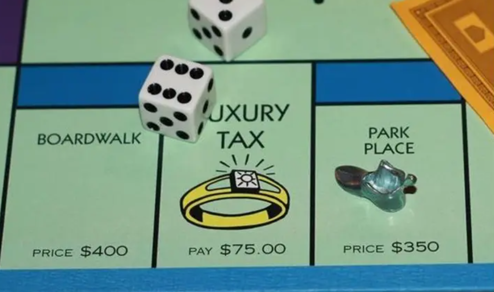
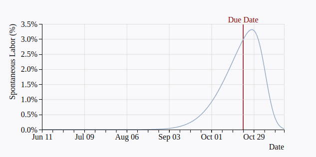

2 Chapter 2 – Probability
2.1 What are we doing here?
In this chapter, we’ll talk about the basics of probability and learn how to simulate data to investigate the probability in different scenarios.
There are lots of reasons we might care about probability.
Many important biological processes are influenced by chance so we need probability to describe these processes.
We don’t want to tell science stories about coincidences. We can use probability to describe the potential for our data to be shaped by coincidence vs the process we are interested in.
Understanding probability helps us understand statistics!
We can use probability in lots of ways. For example, if I’m playing Monopoly and I’m on Park Place, what is the probability that my next roll will take me to Boardwalk?
Or, imagine that you’re pregnant with a due date of Oct 22. What is the probability that you’ll give birth on a specific day?

2.2 Simulating data
You may have learned some mathematical rules to describe probability in a previous class. If so, that’s great! For now though, pretend that you don’t know these rules because this chapter will focus on using simulations to understand probability.
One of the most powerful tools that we’ll have in our statistics learning toolkit are simulations. Simulations let you generate data that you know should look a certain way, so you can test your intuitions. Simulations also let you do the same thing over and over and over.
Let’s start by simulating our class. We’ll create a vector with a number corresponding to each person in the class.
thisClass = 1:25
thisClass [1] 1 2 3 4 5 6 7 8 9 10 11 12 13 14 15 16 17 18 19 20 21 22 23 24 25Now let’s use the R function sample() to sample a random person from the class.
sample(thisClass, size=1)[1] 3We can do this again to conduct a second sample.
sample(thisClass, size=1)[1] 9We can use sample() to answer the following questions:
If we randomly pick a student, how likely are we to select student #19?
mySamples <- replicate(1000, sample(thisClass, size=1))
sum(mySamples==19)/10000[1] 0.0054What we’ve done here is write code that samples one student from the class and then we’ve used replicate() to repeat that sampling 1000 times. After that, we checked how many times we sampled student #19.
2.3 Definitions
2.3.1 Sample Space
The sample space is the set of all possible outcomes. For example, when you flip a coin the possible outcomes are heads and tails.
2.3.2 Probability
We can think about the probability of some outcome as the frequency of that outcome within the sample space.